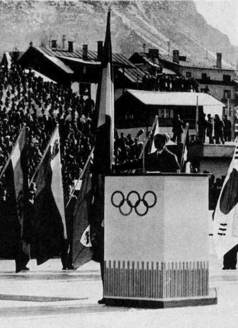

Giuliana Chenal-Minuzzo
Pour chaque édition des Jeux Olympiques, un athlète connaît l’honneur de prononcer le serment olympique. Pour les JO de 1956 à Melbourne en Australie, Giuliana Chenal-Minuzzo, skieuse alpine italienne à eu l’honneur d’être la première femme à prononcer ce serment.
Serment Olympique en français
« Au nom de tous les concurrents, je promets que nous prendrons part à ces Jeux olympiques en respectant et suivant les règles qui les régissent, en nous engageant pour un sport sans dopage et sans drogue, dans un esprit de sportivité, pour la gloire du sport et l'honneur de nos équipes ».